flowchart TB
subgraph silico ["In Silico (simulation)"]
A["Generate initial ensemble<br/>i = 1 to N_e with permeability estimates"] --> B
B["S_i, P_i, K_i at time t_(n-1)<br/>conditioned on y^(1:n-1)"]
B --> C["For each member, simulate<br/>flow to t_n and seismic survey"]
C --> D["S_i, P_i, K_i, y_i at time t_n<br/>conditioned on y^(1:n-1)"]
D --> E["Update ensemble based<br/>on survey at time t_n"]
E --> F["S_i, P_i, K_i at time t_n<br/>conditioned on y^(1:n)"]
F -->|"increment n"| B
end
subgraph situ ["In Situ (field)"]
G["Set up injection site"] --> H
H["Let time pass to t_n<br/>Conduct seismic survey"]
H --> I["May use estimates for<br/>future injection decisions"]
I -->|"increment n"| H
end
H -.->|"field survey y^n"| E
F -.->|"estimates"| I
style silico fill:#f0f4ff,stroke:#333
style situ fill:#fff4f0,stroke:#333
Seismic Monitoring of CO2 Plume Dynamics
Using Ensemble Kalman Filtering
Based on Bruer, Gahlot, Chow & Herrmann (IEEE TGRS, 2025)
2026-02-25

Seismic Monitoring of CO2 Plume Dynamics
Using Ensemble Kalman Filtering
Felix J. Herrmann
School of Earth & Atmospheric Sciences — Georgia Institute of Technology
Based on Bruer et al. (2025)
Outline
Part I — Background
- Motivation: CO2 storage monitoring
- Sequential Bayesian data assimilation
- Kalman filter & ensemble Kalman filter
- Two-phase flow dynamics
- Seismic observation operator
Part II — Method & Results
- EnKF applied to CO2 with seismic data
- Workflow overview (digital shadow)
- Synthetic experiment setup
- EnKF vs. baselines
- Hyperparameter sensitivity
- Conclusions & future work
Part I — Background
Why Monitor CO2 Storage?
- Carbon capture and storage (CCS): geologic storage in saline aquifers and depleted oil fields
- Monitoring is critical to:
- Avoid failure scenarios (leaks, induced seismicity)
- Enable real-time optimization of injection rates
- Underground reservoirs have limited accessibility — measurements confined to surface and sparse boreholes
- Injected CO2 displaces brine \(\Rightarrow\) changes seismic wave propagation
- Seismic methods provide higher resolution than electromagnetic or gravitational methods
Digital Twin perspective
Combining physics-based simulations with real-time seismic observations creates a digital shadow of the subsurface CO2 plume.
Why subsurface CO2 storage? How?
Porous geological formations can hold large amounts of CO2
But the CO2 can leak out…
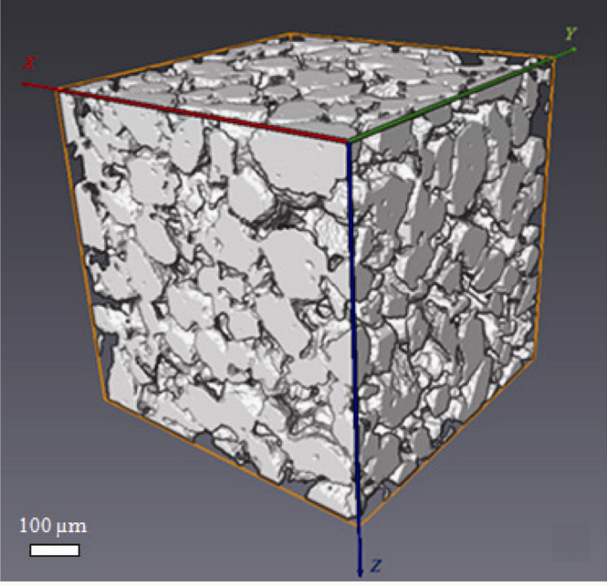
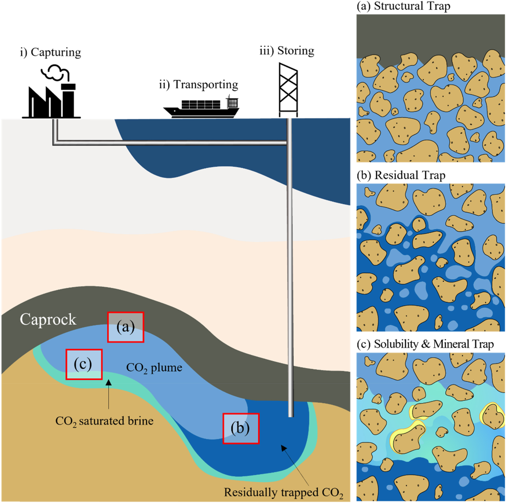
Fluid Dynamics
Difficulties with fluid simulations:
- Unknown subsurface properties.
- Unaccounted-for physics, even with known properties (FluidFlower experiment).
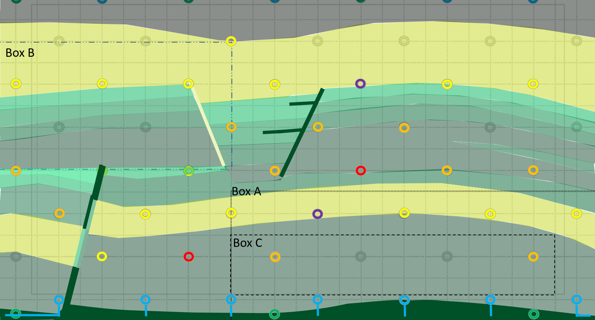
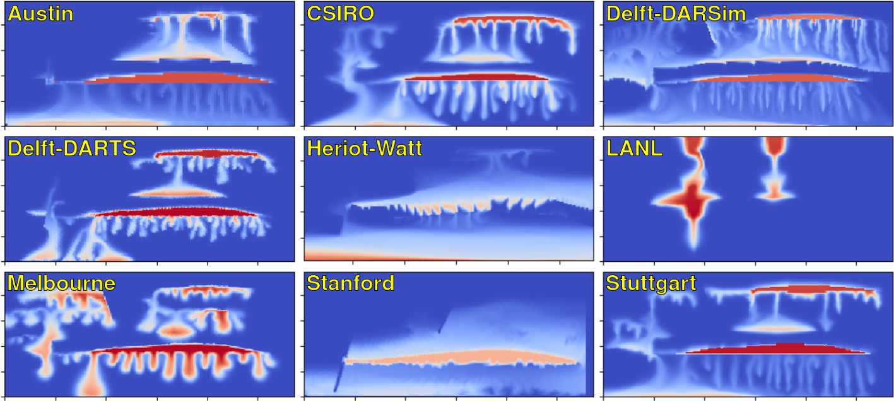
Challenges in Seismic CO2 Monitoring
Existing literature makes one or more of these limiting choices:
- Uses small physical systems with unscalable DA algorithms
- Does not use CO2 flow dynamics
- Simulates seismic data without the wave equation
- Uses unrealistic survey designs
This work addresses all four by applying the scalable ensemble Kalman filter (EnKF) to:
- A high-dimensional CO2 reservoir
- With two-phase flow dynamics
- And time-lapse full waveform seismic data
- Using a realistic surface-seismic survey design
Seismic imaging
Benefits of monitoring:
- Can check for leaks.
- Can optimize injection rate.
- Don’t need to drill more wells.
Difficulties with monitoring:
- Unknown subsurface properties.
- Nonlinear, noisy.
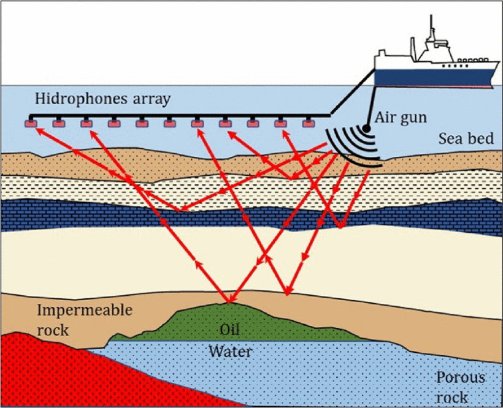
DA — data assimilation
Seismic + fluid dynamics should be better than either alone.
Computational difficulties:
- Data is expensive (scarce) and high-dimensional.
- Requires quantified uncertainty, which can naively require much storage space.
- Full waveform seismic data: \(\sim 10^8\) DOFs \(\sim\) 400 megabytes.
- Grid for \(10^{10}\) cubic meter reservoir: \(\sim 10^7\) DOFs \(\sim\) 80 megabytes.
- \(\implies\) Gaussian covariance matrix: \(\sim 10^{15}\) DOFs \(>\) 1000 terabytes.
- Nonlinearity: is more complex than Gaussian distribution.
How can we do DA?
Results from the field of weather forecasting (big, nonlinear DA).
- Particle filters (ensemble of weighted particles)
- Great for nonlinearity and expressing non-Gaussian data.
- Difficult for high-resolution data, but there is research progress.
- Variational optimization
- Great for nonlinearity.
- Expensive/inaccurate for estimating uncertainty.
- EnKF (ensemble Kalman filter)
- Successful for some nonlinear problems and expresses non-Gaussian data.
- Easy to estimate uncertainty.
- In operation for more than 15 years, usually combined with other methods.
Pre-existing DA research for seismic-CO2
No one does scalable DA with fluid dynamics and full waveform seismic.
| DA algorithm | # of DOFs | Fluid dynamics? | Seismic data? | Dynamic estimate? | |
|---|---|---|---|---|---|
| Guzman et al. (2014) | EnKF | ? | ✓ | InSAR | × |
| Li et al. (2014) | HiKF | ~104 | × | times | ✓ |
| Li et al. (2015) | CSKF | ~103 | ✓ | times | ✓ |
| Li et al. (2017) | CSKF | ~103 | ✓ | well | ✓ |
| Ma et al. (2019) | EnKF | ~104 | ✓ | fake | ✓ |
| Alfonzo et al. (2020) | ETKF | ~104 | × | fake | ✓ |
| Grana et al. (2021) | EnKF | ~103 | ✓ | fake, EM | ✓ |
| Eikrem et al. (2019) | IEKF | ~104 | × | ✓ | × |
| Huang et al. (2020) | HiKF | ~105 | first step | ✓ | ✓ |
| Dupuy et al. (2021) | Gibbs NA | 79 | × | ✓ | ✓ |
| Bruer (2024) | EnKF | ~105 | ✓ | ✓ | ✓ |
Existing work (“et al.” removed from every entry)
Pre-existing research for seismic-CO2: ML (machine learning)
No one does scalable DA with fluid dynamics and full waveform seismic.
| ML method | DA algorithm | # of DOFs | Seismic data? | Dynamic estimate? | |
|---|---|---|---|---|---|
| Tang et al. (2020) | Surrogate | RML | ~103 | well | × |
| Tang et al. (2022a) | Surrogate | RS | ~105 | InSAR | × |
| Tang et al. (2022b) | Surrogate | EnKS | ~105 | InSAR | × |
| Seabra et al. (2024) | Surrogate | EnKS, RML | ~103 | well | × |
| Tang et al. (2021) | Flow surr. | EnKS | ~106 | fake | × |
| Liu et al. (2023) | Enc., BNN | Variational | ~106 | fake, EM | ✓ |
| Yin et al. (2022) | Flow surr. | Variational | ~103 | ✓ | × |
| Gahlot (2024) | CNF | Transport map | ~105 | ✓ | ✓ |
| Bruer (2024) | × | EnKF | ~105 | ✓ | ✓ |
Existing work (“et al.” removed from every entry)
Technical background
Sequential DA: notation and problem statement
Notation
- Hidden state: \(x\) (CO2 saturation field +)
- Observation: \(y\) (seismic data)
- Time: \(t\)
- Time index: \(n\)
- Random noise: \(\eta_f\) and \(\eta_h\)
Problem statement
For all time steps \(n\),
- Given: \(y^{1:n} = \{y^1, y^2, \ldots\, y^{n}\}\)
- Estimate: posterior distribution of \(x^{n}\)
\[ \text{(Fluid dynamics) Transition operator } f: \quad x^{n+1} = f(x^n, \eta_f;\; t_n, t_{n+1}) \]
\[ \text{(Seismic) Observation operator } h: \quad y^{n+1} = h(x^{n+1}, \eta_h;\; t_{n+1}) \]
Sequential Data Assimilation
The goal is to estimate a hidden state \(\boldsymbol{x}^n\) over time given noisy observations \(\boldsymbol{y}^n\).
Transition and observation operators:
\[ \boldsymbol{x}^{n+1} = f(\boldsymbol{x}^n, \boldsymbol{\eta}_f;\; t_n, t_{n+1}), \qquad \boldsymbol{y}^{n+1} = h(\boldsymbol{x}^{n+1}, \boldsymbol{\eta}_h;\; t_{n+1}) \]
Two repeated phases via Bayes’ rule:
\[ \underbrace{p(\boldsymbol{x}^n \mid \boldsymbol{y}^{1:n-1})}_{\text{predict}} = \int p(\boldsymbol{x}^n \mid \boldsymbol{x}^{n-1})\, p(\boldsymbol{x}^{n-1} \mid \boldsymbol{y}^{1:n-1})\, d\boldsymbol{x}^{n-1} \]
\[ \underbrace{p(\boldsymbol{x}^n \mid \boldsymbol{y}^{1:n})}_{\text{update}} = \frac{p(\boldsymbol{y}^n \mid \boldsymbol{x}^n)\, p(\boldsymbol{x}^n \mid \boldsymbol{y}^{1:n-1})}{p(\boldsymbol{y}^n \mid \boldsymbol{y}^{1:n-1})} \]
Generic Data Assimilation Loop
Algorithm: Generic DA loop
Input: prior distribution, data \(\boldsymbol{y}^n\) at time \(t_n\)
- posterior \(\gets\) prior; set \(t_{n-1} \gets 0\)
- For each \((\boldsymbol{y}^n, t_n)\) in observations:
- Predict: prior \(\gets\) Predict(posterior, \(t_{n-1}\), \(t_n\))
- Update: posterior \(\gets\) Update(prior, \(\boldsymbol{y}^n\))
- \(t_{n-1} \gets t_n\)
The Kalman Filter
Assumes Gaussian distributions with linear operators.
Given forecast distribution \(p(\boldsymbol{x}) = \mathcal{N}(\boldsymbol{\mu}_f, \mathbf{B}_f)\), the Kalman update yields:
\[ \boldsymbol{\mu}_a = \boldsymbol{\mu}_f + \mathbf{K}(\boldsymbol{y} - h(\boldsymbol{\mu}_f)) \] \[ \mathbf{B}_a = (\mathbf{I} - \mathbf{K}\mathbf{H})\,\mathbf{B}_f \]
where the Kalman gain is:
\[ \mathbf{K} = \text{cov}(\boldsymbol{x}_f, \boldsymbol{y}_f)\;\text{cov}(\boldsymbol{y}_f)^{-1} \]
where \(\text{cov}(\boldsymbol{x}_f, \boldsymbol{y}_f) = \mathbb{E}\big[(\boldsymbol{x}_f - \boldsymbol{\mu}_f)(\boldsymbol{y}_f - \boldsymbol{\mu}_y)^T\big]\) is the cross-covariance and \(\text{cov}(\boldsymbol{y}_f) = \text{cov}(\boldsymbol{y}_f, \boldsymbol{y}_f)\).
where \(\boldsymbol{\mu}_f\) / \(\boldsymbol{\mu}_a\) = forecast / analysis mean, \(\mathbf{B}_f\) / \(\mathbf{B}_a\) = forecast / analysis covariance, \(\mathbf{H}\) = linearized observation operator, and subscripts \(f\) = forecast (prior), \(a\) = analysis (posterior).
Problem: For large state (\(N_x \sim 10^5\)) and observation (\(N_y \sim 10^6\)) vectors, storing \(\mathbf{B}_f \in \mathbb{R}^{N_x \times N_x}\) requires \(\sim 100\) GB!
The Ensemble Kalman Filter (EnKF)
Key idea: Represent the prior by an ensemble of \(N_e\) samples instead of storing the full covariance.
Update each ensemble member: \[ \boldsymbol{x}_{a,i} = \boldsymbol{x}_{f,i} + \mathbf{K}\big(\boldsymbol{y} - \boldsymbol{y}_{f,i}\big), \quad i = 1, \ldots, N_e \]
with simulated observations \(\boldsymbol{y}_{f,i} = h(\boldsymbol{x}_{f,i}, \boldsymbol{\eta}_{h,i})\) and Kalman gain:
\[ \mathbf{K} = \mathbf{X}_f \mathbf{Y}_f^T \big(\mathbf{Y}_f \mathbf{Y}_f^T\big)^{-1} \]
where \(\mathbf{X}_f\) has columns \((\boldsymbol{x}_{f,i} - \boldsymbol{\mu}_f)/\sqrt{N_e - 1}\) and \(\mathbf{Y}_f\) has columns \((\boldsymbol{y}_{f,i} - \boldsymbol{\mu}_y)/\sqrt{N_e - 1}\) (ensemble perturbation matrices).
Computational advantage:
| Time | Storage | |
|---|---|---|
| Standard KF | \(O(N_x^3 + N_y^3)\) | \(O(N_x^2 + N_y^2)\) |
| EnKF | \(O(N_x N_e^2 + N_y N_e^3)\) | \(O(N_x N_e + N_y N_e)\) |
Kalman vs ensemble Kalman
Drawbacks Kalman:
- Linear: requires linearizing \(f\) and \(h\) to update covariance matrix.
- Gaussian: expresses Gaussian distributions only.
- Covariance matrix: has large storage and compute requirements.
Benefits EnKF over KF:
- Linearizes the update step only.
- Expresses non-Gaussian distributions.
- Balances storage cost with accuracy.
EnKF predict-update loop
Easy to implement
Initialize ensemble using prior information \(p(x^0)\).
When data is observed:
- Apply transition operator to each ensemble member (nonlinear, parallel).
- Apply observation operator to each ensemble member (nonlinear, parallel).
- Apply EnKF update to each ensemble member (linear).
EnKF as Optimization
The EnKF update can be viewed as solving \(N_e\) linearized optimization problems:
\[ \min_{\boldsymbol{c}_i \in \mathbb{R}^{N_e}}\; \|\boldsymbol{y}_{a,i} - \boldsymbol{y}\|_{\mathbf{R}^{-1}}^2 + \|\boldsymbol{x}_{a,i} - \boldsymbol{x}_{f,i}\|_{\mathbf{B}_f^{-1}}^2 \]
with \(\boldsymbol{x}_{a,i} = \boldsymbol{\mu}_f + \mathbf{X}_f \boldsymbol{c}_i\), \(\boldsymbol{y}_{a,i} = \boldsymbol{\mu}_y + \mathbf{Y}_f \boldsymbol{c}_i\), and \(\mathbf{R}\) the observation noise covariance.
This is analogous to FWI-type optimization — minimize data misfit regularized by distance from the forecast.
Two-Phase Flow Dynamics
The reservoir consists of brine and supercritical CO2 in porous rock. Governing PDE:
\[ \frac{\partial(\phi \rho_i S_i)}{\partial t} - \nabla \cdot (\rho_i v_i) = \rho_i q_i \]
\[ v_i = -\frac{k_{ri}}{\mu_i} K \nabla(P_i - \rho_i g Z) \]
with permeability tensor: \[ K = \begin{bmatrix} K_v & 0 \\ 0 & K_h \end{bmatrix}, \qquad K_v/K_h = 0.36 \]
where for fluid \(i\): \(\phi\) = porosity, \(\rho_i\) = fluid density, \(S_i\) = saturation, \(v_i\) = velocity, \(q_i\) = volume injection rate, \(k_{ri}\) = relative permeability, \(\mu_i\) = fluid viscosity, \(K\) = permeability tensor (\(K_h\) horizontal, \(K_v\) vertical), \(g\) = gravitational acceleration, \(Z\) = depth.
Transition density
Transition operator:
\[\boldsymbol{S}^{n+1}, \boldsymbol{P}^{n+1} = \mathcal{M}(\boldsymbol{S}^n, \boldsymbol{P}^n, \boldsymbol{K}, \boldsymbol{\phi};\; t_n, t_{n+1})\]
where \(\boldsymbol{S}^n\), \(\boldsymbol{P}^n\) = spatially discretized CO2 saturation and pressure at time \(t_n\), \(\boldsymbol{K}\) = permeability field, \(\boldsymbol{\phi}\) = porosity field, and \(\mathcal{M}\) = nonlinear operator that numerically solves the two-phase flow PDE from \(t_n\) to \(t_{n+1}\).
Solved numerically with JutulDarcy.jl (implicit Euler, Newton’s method, auto-diff).
Relative Permeability Model
Modified Brooks-Corey model with residual saturation \(r\):
\[ k_{ri} = \text{clamp}\!\Big(\frac{S_i - r}{1 - 2r},\; 0,\; 1\Big)^{\!2} = \begin{cases} 1 & \text{if } S_i \ge 1 - r \\ 0 & \text{if } S_i \le r \\ \displaystyle\frac{(S_i - r)^2}{(1-2r)^2} & \text{else} \end{cases} \]
- Residual saturation \(r = 0.1\)
- Ensures fluids are immobile below threshold
- Nonlinear coupling between saturation and flow velocity
Fluid flow in CO2 reservoir
- Supercritical CO2 due to high temperature and pressure.
- High density like a liquid \(\sim 30\%\)–\(80\%\) as dense as water.
- Low viscosity like a gas.
- Flow described by porosity and permeability fields.
- Flow is faster when saturation is higher.
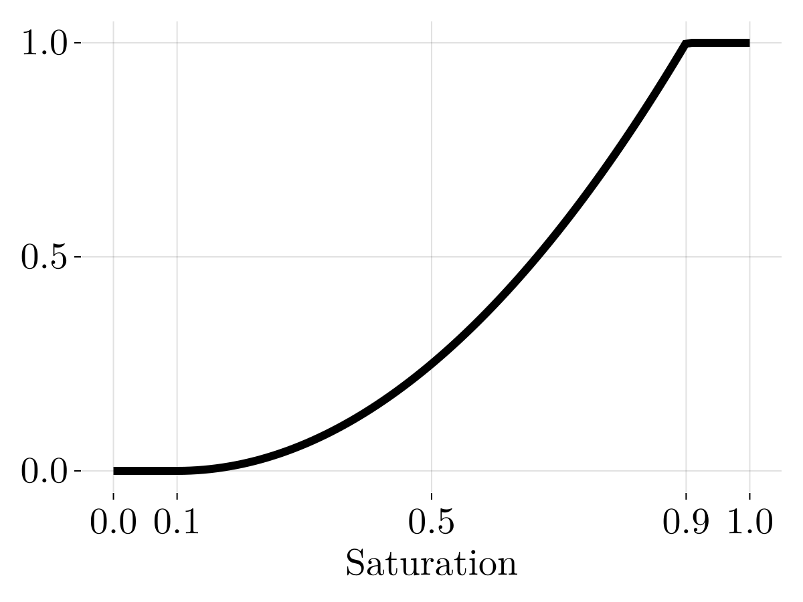
CO2 saturation field flow
Nonlinearity: slow flow at edges, fast flow inside plume.
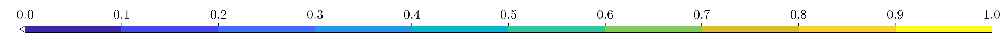
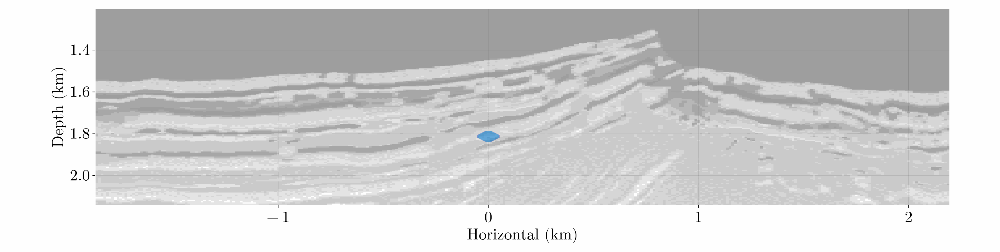
Seismic Observation Operator
Active-source surface seismic governed by the acoustic wave equation:
\[ \frac{m}{\rho}\frac{\partial^2 \delta_p}{\partial t^2} - \nabla \cdot \!\left(\frac{1}{\rho}\nabla \delta_p\right) + w \frac{\partial \delta_p}{\partial t} = \frac{q}{\rho} \]
where \(m\) is the P-wave squared slowness and \(\rho\) is density.
Full waveform data: \[ \boldsymbol{d}(\boldsymbol{S};\, \boldsymbol{\eta}) = \mathcal{H}\big(\boldsymbol{m}(\boldsymbol{S}),\, \boldsymbol{\rho}(\boldsymbol{S})\big) + \boldsymbol{\eta} \]
- \(\boldsymbol{m}(\boldsymbol{S})\) and \(\boldsymbol{\rho}(\boldsymbol{S})\) from patchy-saturation rock physics model
- CO2 decreases density and P-wave modulus
- Solved with JUDI.jl / Devito (8th order spatial FD)
Rock Physics: Patchy-Saturation Model
Links CO2 saturation to seismic parameters:
Density (arithmetic average): \[ \rho(S) = \rho_{wr} + S\,\phi\,(\rho_g - \rho_w) \]
P-wave modulus (harmonic average): \[ \lambda(S) = \Big[(1-S)\,\lambda_{wr}^{-1} + S\,\lambda_{gr}^{-1}\Big]^{-1} \]
Squared slowness (quadratic in \(S\)): \[ m(S) = \rho(S)/\lambda(S) \]
where \(\lambda_{gr}\) is obtained from Gassmann’s equation for the CO2-saturated rock.
RTM Imaging Operator
The observation operator constructs a reverse-time migration (RTM) image:
\[ h(\boldsymbol{x},\, \nu\boldsymbol{\eta}) = \mathbf{P}\,\mathbf{J}_0^T\Big(\mathcal{H}\big(m(\boldsymbol{S}),\, \rho(\boldsymbol{S})\big) + \nu\boldsymbol{\eta}\Big) \]
- \(\mathbf{J}_0 = \frac{d\mathcal{H}}{d\boldsymbol{m}_0}(\boldsymbol{m}_0, \boldsymbol{\rho}_0)\): Jacobian of wave operator \(\mathcal{H}\) at smooth baseline model \((\boldsymbol{m}_0, \boldsymbol{\rho}_0)\)
- \(\mathbf{P}\): linear post-processor that mutes the water layer and scales the image as a function of depth
- \(\nu\): noise scaling parameter controlling SNR \(= -20\log\nu\) dB
- \(\nu_B^*\): true noise magnitude for baseline survey
Time-lapse image: \[ A(\boldsymbol{x}) = h(\boldsymbol{x},\, \nu\boldsymbol{\eta}) - h_B(\nu_B^*\boldsymbol{\eta}_B^*) \]
Baseline subtraction reveals changes due to CO2 injection.
Seismic observation overview
Lots of data!
Each seismic source outputs a wave.
Each seismic receiver records a wave from each source.
Data size is product of
- # of receivers,
- # of sources,
- # of waveform time steps.
Time-lapse — pre-injection image
- Baseline survey before injection: \(d_B\).
- Approximate subsurface seismic parameters smoothly as \(m_0\): \(d_0 = F(m_0)\).
- Gradient of misfit \(\|d_B - F(m_0)\|^2\) \(\implies\) seismic image \(A_B\).
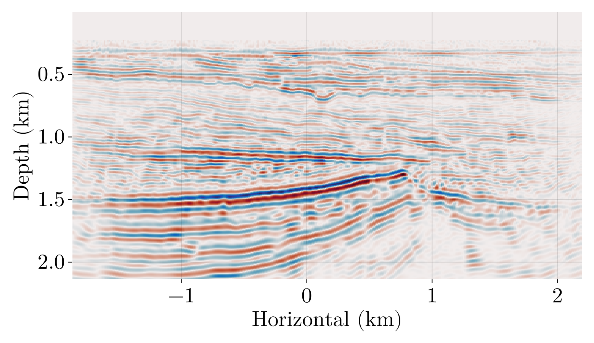
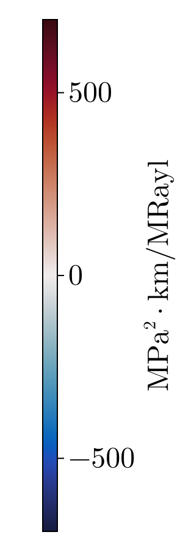
Time-lapse — post-injection image
- Survey after injecting for some time: \(d\).
- Difference in measurements: \(d - d_B\) (difficult to interpret).
- Gradient of misfit \(\|d - F(m_0)\|^2\) \(\implies\) seismic image \(A\).
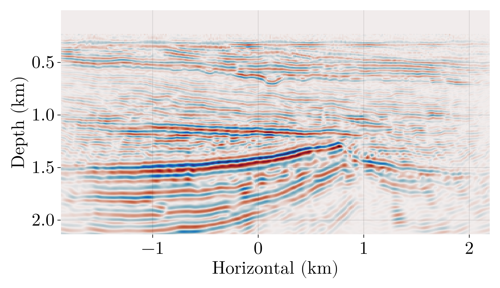
Time-lapse — difference image
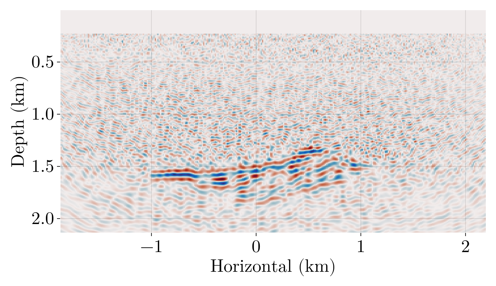
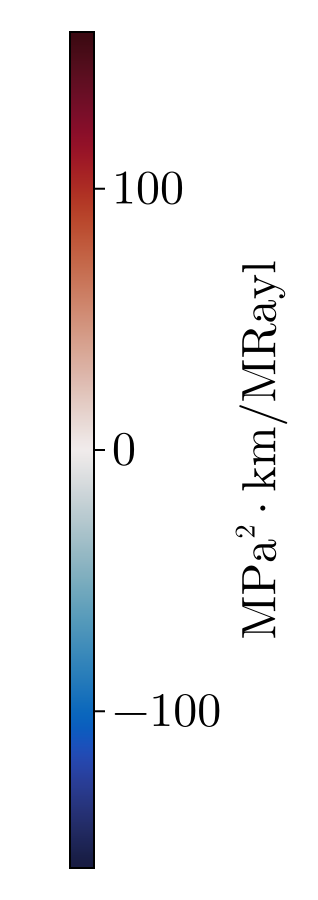
Example CO2 plume
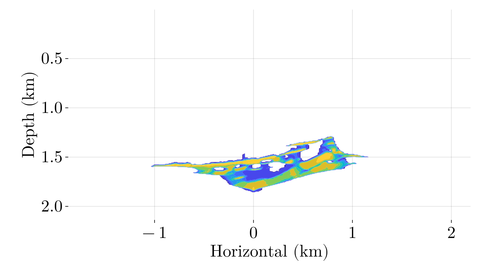
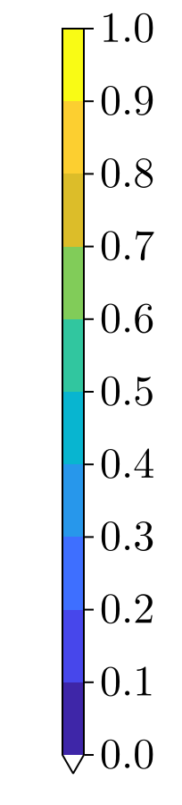
Workflow Diagram
Part II — Method & Results
Operations on ensemble members
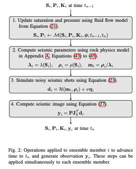
Adapted from (bruer2025?)
EnKF State Vector for CO2 Monitoring
The state for ensemble member \(i\):
\[ \boldsymbol{x}_i^n = (\boldsymbol{S}_i^n,\; \boldsymbol{P}_i^n,\; \boldsymbol{K}_i) \]
Transition: Apply two-phase flow for each member independently: \[ \boldsymbol{S}_i^{n+1},\, \boldsymbol{P}_i^{n+1} = \mathcal{M}(\boldsymbol{S}_i^n,\, \boldsymbol{P}_i^n,\, \boldsymbol{K}_i,\, \boldsymbol{\phi};\; t_n, t_{n+1}) \]
Key design choices:
- No stochastic noise (\(\boldsymbol{\eta}_f\)) in transition — uncertainty comes from the unknown permeability
- Each member initialized with a different permeability realization
- Permeability sampled from velocity-permeability relation with elastic deformation of the velocity field
Workflow: Digital Shadow
In silico (simulation)
- Generate initial ensemble (\(N_e = 256\)) with different permeabilities and \(S = 0\)
- Simulate two-phase flow to next survey time
- Simulate seismic survey for each member
- Compute RTM images
- EnKF update using field survey data
- Repeat from step 2
In situ (field)
- Set up CO2 injection site
- Let time pass, conduct seismic survey
- Send survey data to simulation
- Receive updated estimates
- Optimize injection parameters
- Repeat from step 2
Important
The simulated system takes information from the real system without automatically affecting it — this is a digital shadow.
Workflow: Per-Member Pipeline
Each ensemble member undergoes these steps independently:
- Flow model: \(\boldsymbol{S}_i, \boldsymbol{P}_i \gets \mathcal{M}(\boldsymbol{S}_i, \boldsymbol{P}_i, \boldsymbol{K}_i, \boldsymbol{\phi};\; t_{n-1}, t_n)\)
- Rock physics: \(\boldsymbol{\lambda}_i = \lambda(\boldsymbol{S}_i)\), \(\boldsymbol{\rho}_i = \rho(\boldsymbol{S}_i)\), \(\boldsymbol{m}_i = \boldsymbol{\rho}_i/\boldsymbol{\lambda}_i\)
- Seismic simulation: \(\boldsymbol{d}_i = \mathcal{H}(\boldsymbol{m}_i, \boldsymbol{\rho}_i) + \nu\boldsymbol{\eta}_i\)
- processed RTM image: \(\boldsymbol{y}_i = \mathbf{P}\,\mathbf{J}_0^T \boldsymbol{d}_i\)
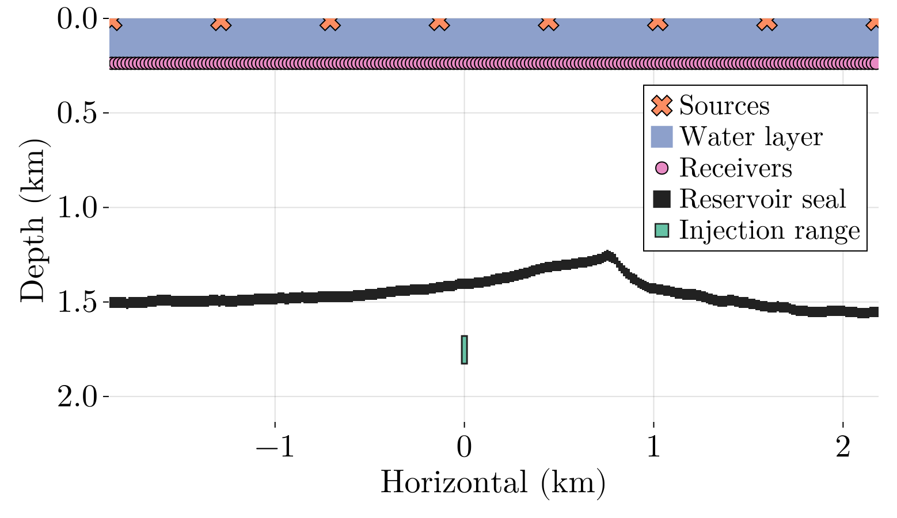
Comparison Methods
Three ensemble methods compared as optimizations:
\[ \text{NoObs:}\quad \boldsymbol{x}_{a,i} = \arg\min_{\boldsymbol{x}} \|\boldsymbol{x} - \boldsymbol{x}_{f,i}\|_{\mathbf{B}_f^{-1}}^2 \]
\[ \text{JustObs:}\quad \boldsymbol{x}_{a,i} = \arg\min_{\boldsymbol{x}} \|h(\boldsymbol{x}) - \boldsymbol{y}^n\|_{\mathbf{R}^{-1}}^2 + C(\boldsymbol{x}) \]
\[ \text{EnKF:}\quad \boldsymbol{x}_{a,i} = \arg\min_{\boldsymbol{x}} \|\hat{h}(\boldsymbol{x}) - \boldsymbol{y}^n\|_{\mathbf{R}^{-1}}^2 + \|\boldsymbol{x} - \boldsymbol{x}_{f,i}\|_{\mathbf{B}_f^{-1}}^2 \]
Recall Kalman update in terms of covariances, and the EnKF uses sample covariances \(\widehat{\text{cov}}\):
\[\begin{align} \mathbf{x}_{a,i} &= \mathbf{x}_{f,i} + \widehat{\text{cov}}(\mathbf{x}_f, \mathbf{y}_f)(\widehat{\text{cov}}(\mathbf{y}_f) + \mathbf{R})^{-1}(\mathbf{y} - \mathbf{y}_{f,i}).\label{eq:noise_tests_enkf2} \end{align}\]
\(\mathbf{R}\) acts as a regularization in the inversion and is a non-singular approximation of the covariance of any observation noise not already represented in \(\widehat{\text{cov}}(\mathbf{y}_f)\).
| Method | Uses dynamics? | Uses observations? | Solution |
|---|---|---|---|
| NoObs | Yes | No | \(\boldsymbol{x}_{a,i} = \boldsymbol{x}_{f,i}\) (trivial) |
| JustObs | No | Yes | Same for all members |
| EnKF | Yes | Yes | Member-specific |
Test Scenario: Compass Model
Domain & survey parameters:
- 4.05 km \(\times\) 2.125 km on a 325 \(\times\) 341 grid
- Cell size: 12.5 m \(\times\) 6.25 m
- 5-year injection, surveys every year
- 8 sources, 200 receivers
- SNR = 8 dB
- \(N_e = 256\) ensemble members
- Based on 2D slice of Compass model (North Sea)
Seismic Field Parameters
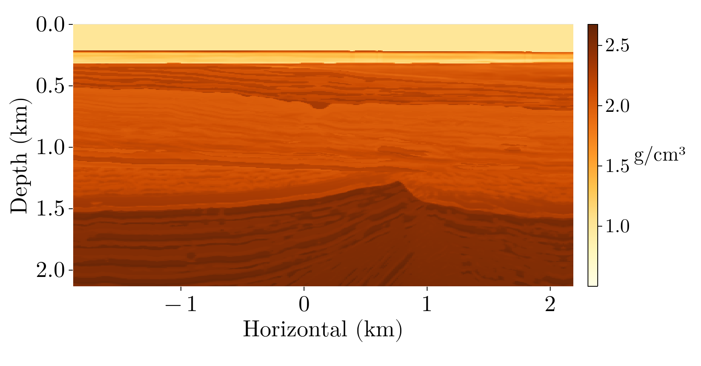
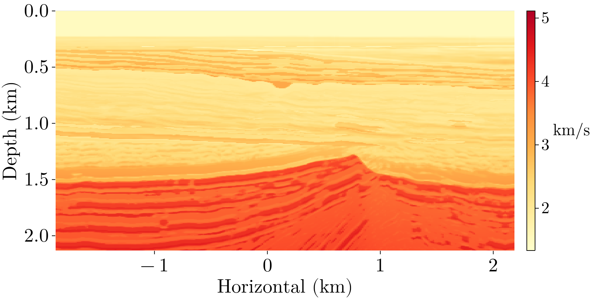
Derived from a 2D slice of the Compass model, capturing geological complexity of the North Sea subsurface.
Permeability Ensemble
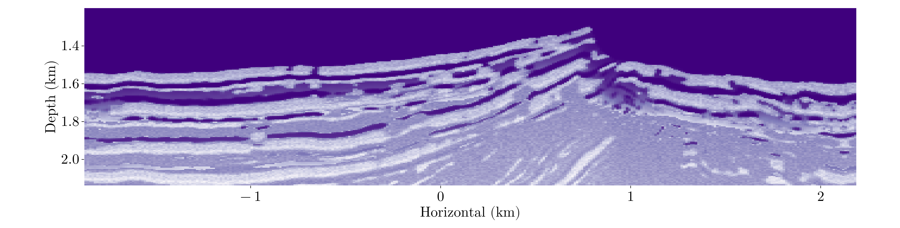
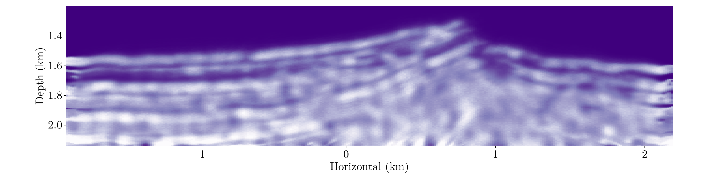
Ground-Truth CO2 Plume Evolution
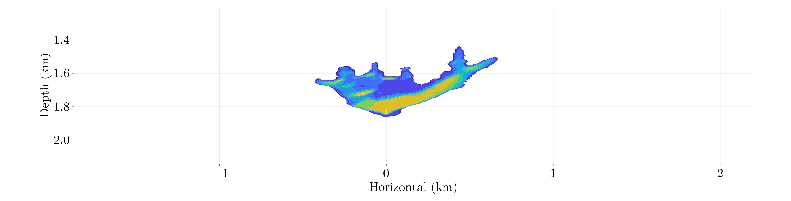
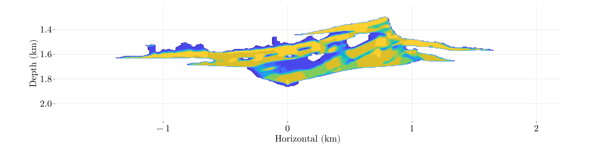
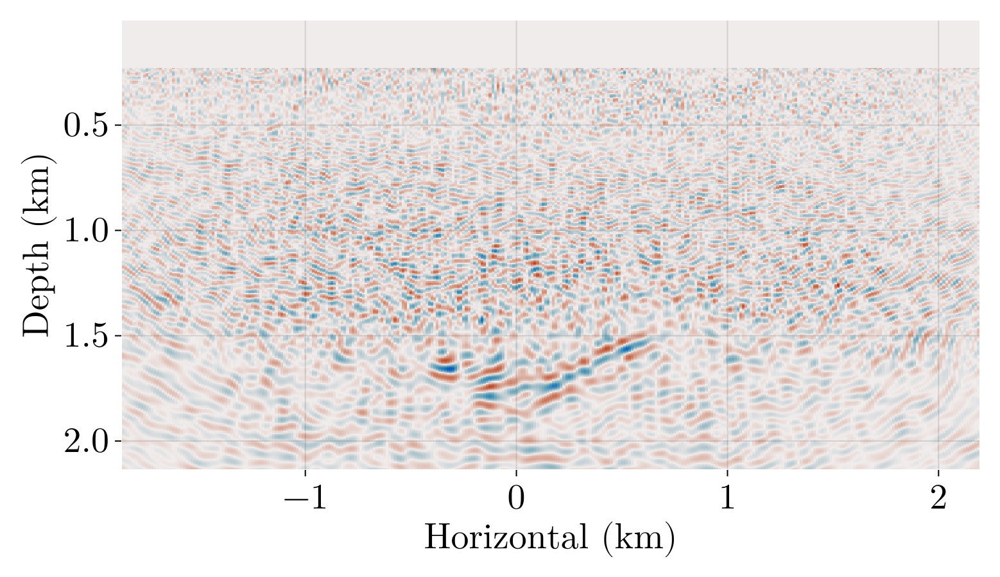
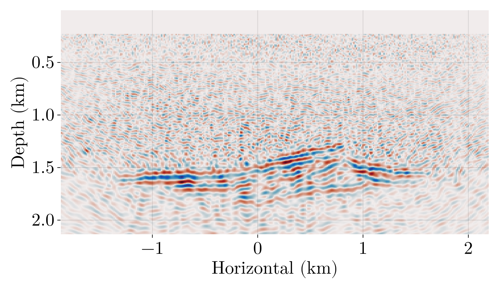
Results: EnKF vs. Baselines — Plume Estimates
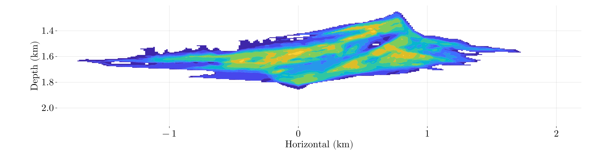
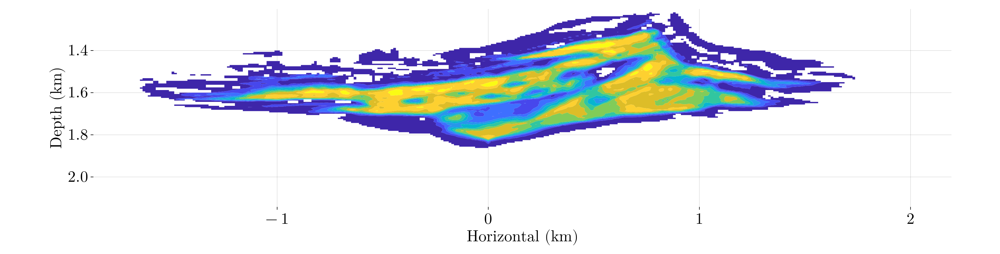
Results: Error Fields at Year 5
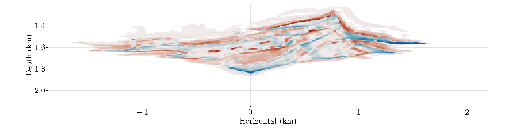
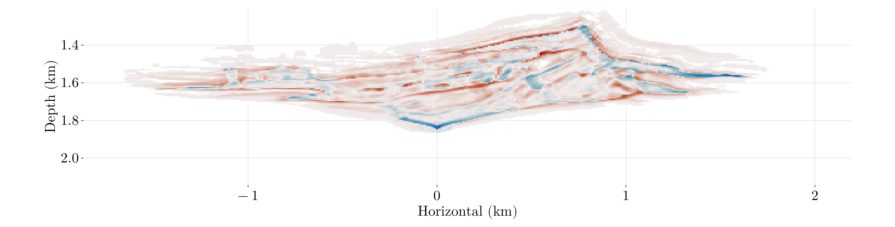
Results: Error Over Time
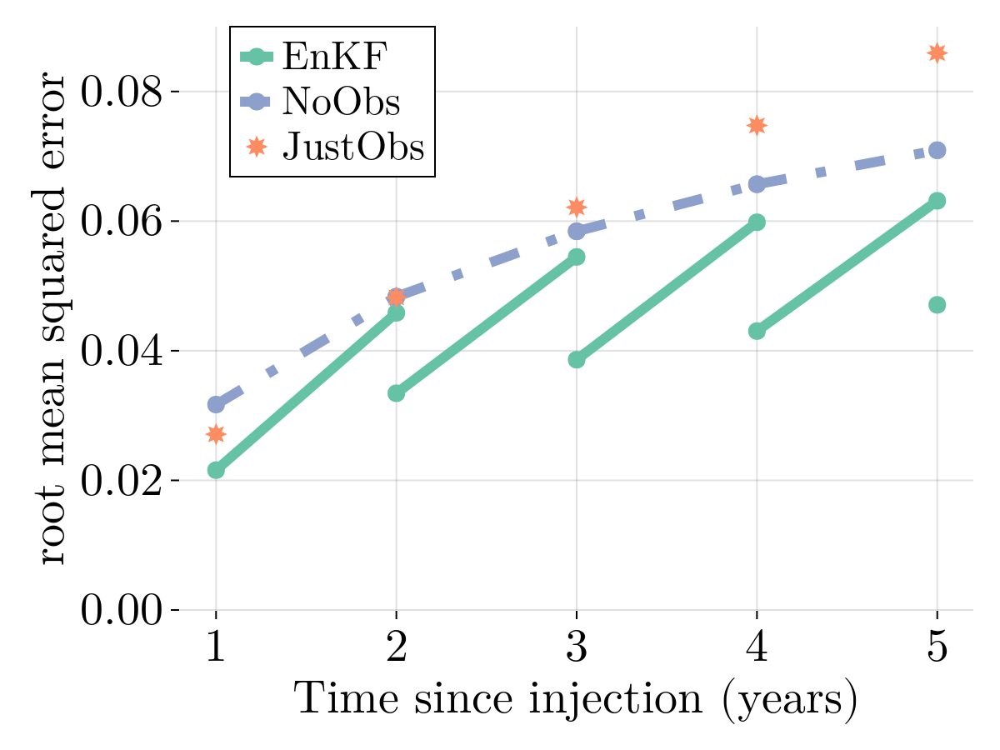
Key observations:
- EnKF consistently achieves lower error than both baselines
- NoObs error grows steadily due to permeability uncertainty
- JustObs (even noise-free!) performs worse — dynamics are more informative than observations alone
- Sharp drops at each yearly survey show the value of data assimilation
- Error growth between surveys shows limits of forecasting with uncertain permeability
EnKF Plume Tracking Over Time
EnKF mean saturation
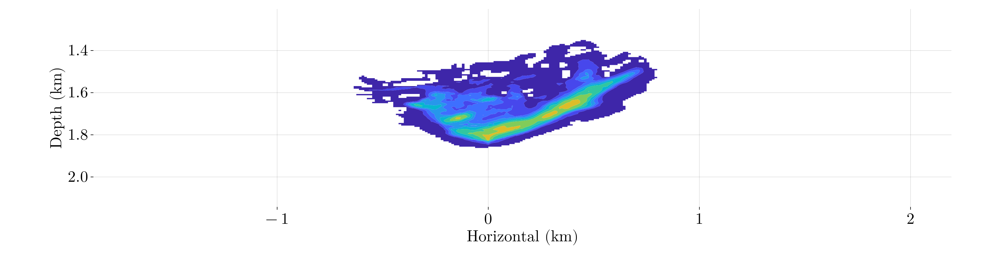
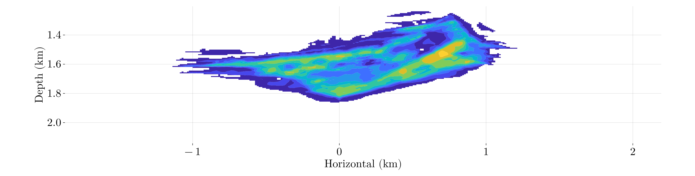
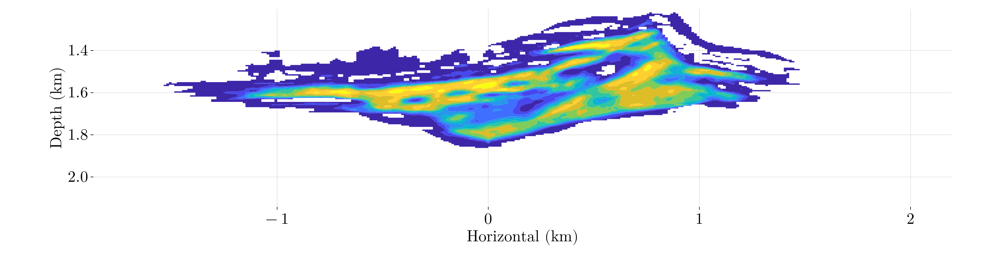
Error
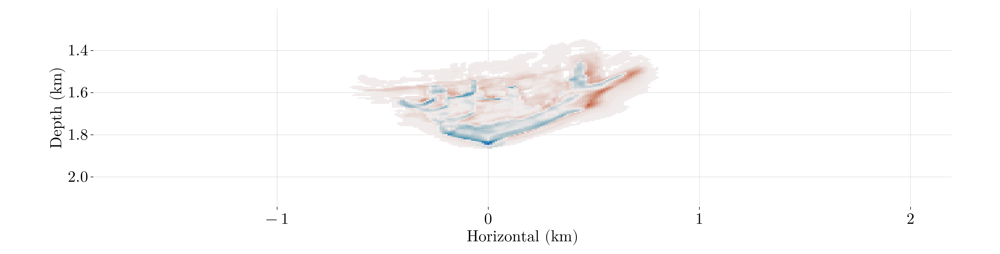
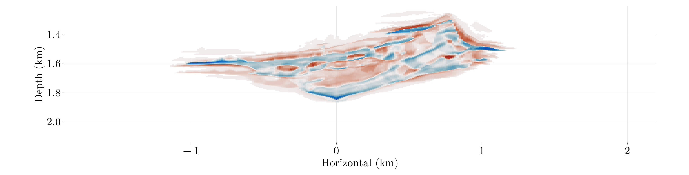
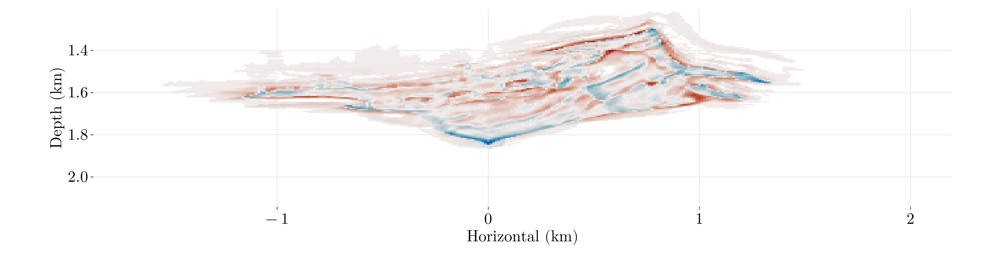
Scalability Considerations
Current 2D experiment:
- State vector: \(\sim 10^5\) DOF
- Observation vector: \(\sim 10^6\) DOF
- 256 ensemble members
Scaling to 3D (\(\sim 10^{10}\,\text{m}^3\)):
- State: \(\sim 10^7\) DOF
- Standard KF: \(> 1\) TB storage
- EnKF scales linearly with DOF
- Ensemble size independent of grid size
- Transition + observation trivially parallelizable
Cost perspective
The computational cost of the EnKF update is negligible compared to simulating transition and observation. And simulations are far cheaper than conducting a seismic survey.
Conclusions
EnKF + full waveform data + CO2 dynamics achieves lower error than either physics-only or observation-only baselines
The EnKF provides a scalable framework for seismic CO2 monitoring as a digital shadow
Limitations addressed transparently: immiscible fluids, Born approximation, instrumental noise only, homogeneous porosity
Future Work
Update permeability (not just saturation) during assimilation
- Currently the dominant source of forecast error
Use nonlinear seismic observations (move beyond Born approximation)
Include heterogeneous porosity and capillary pressure
Account for environmental noise (non-Gaussian, spatially correlated)
Explore ML-based DA with full waveform data (conditional normalizing flows)
Scale to 3D field-scale reservoirs
Ongoing work
See Gahlot et al. (2024) for preliminary results combining ML-based DA with full-waveform seismic data and CO2 fluid dynamics using conditional normalizing flows.
References
Bruer, Grant, Abhinav Prakash Gahlot, Edmond Chow, and Felix Herrmann. 2025. “Seismic Monitoring of CO2 Plume Dynamics Using Ensemble Kalman Filtering.” IEEE Transactions on Geoscience and Remote Sensing.
Thank You
Key takeaway: The ensemble Kalman filter is a promising, scalable approach for building digital shadows of subsurface CO2 reservoirs monitored with time-lapse seismic data.